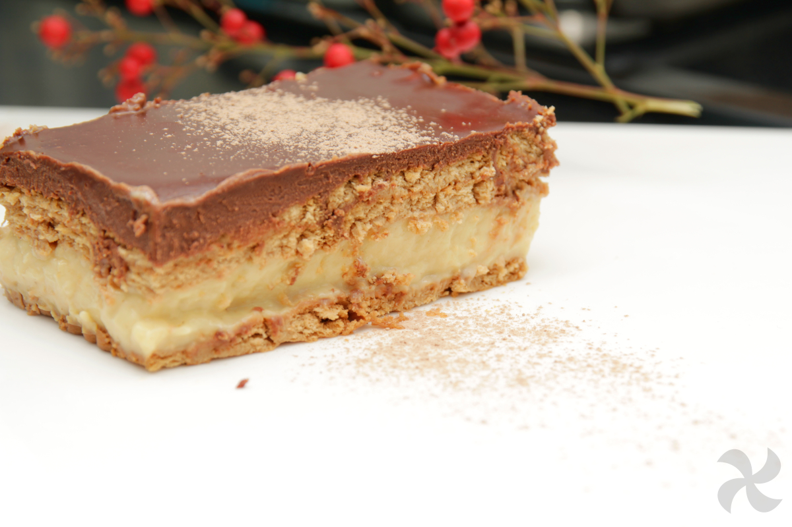

Tarta de la abuela
Ingredientes
- 2 sobres de preparado de natillas
- 2 litros de leche
- 3 cucharadas de azúcar
- 200 ml de nata para montar
- 250 gr de chocolate
- 40 gr de mantequilla
- 2 cucharadas de agua
- 1 cucharada de canela
- 3 paquetes de galletas
- Licor al gusto
Preparación
- 1. En primer lugar preparamos las natillas. De un litro de leche llena medio vaso y otro medio vaso, y en cada uno disuelve un sobre de natillas.
- 2. Pon el resto del litro de leche a calentar en un cazo a temperatura media. Cuando hierva la leche incorpora las restantes 3 cucharadas de azúcar y los vasos con las natillas disueltas, aparta el cazo del fuego y remueve continuamente durante un par de minutos con un batidor de varillas para evitar que se pegue al fondo. Puedes dejarlas templar unos minutos para que espesen un poco, aunque no necesitas que estén frías porque si te esperas demasiado podrían cuajarse del todo y te costaría poner las natillas en la tarta.
- 3. Vamos ahora con el chocolate, siguiendo nuestra receta de cobertura de chocolate brillante. Pon en un cazo la nata, y cuando hierva aparta del fuego y añádele el chocolate ligeramente troceado y la mantequilla.
- 4. Con una lengua de cocina remueve bien hasta que el chocolate se disuelva por completo (todo esto hazlo rápidamente para que la mezcla siga caliente).
- 5. Incorpora las 2 cucharadas de agua, es el truco definitivo para que la cobertura quede fluida. Si te gusta que quede más espesa puedes no echarle el agua.
- 6. En un plato hondo vamos a ir mojando las galletas. Para ello, ve vertiendo en él leche y un poco de licor conforme haga falta. Moja cada galleta sin pausa, es decir, coges la galleta, la sumerges y la sacas para que se empape muy poquito, ya que si dejas que se humedezca demasiado la tarta quedará muy blanda.
- 7. Ve colocando las galletas en el molde para crear la base. Encima vierte la mitad de las natillas y repártelas bien por toda la superficie. Coloca otra capa de galletas y encima algo menos de la mitad del chocolate.
- 8. Vuelve a poner otra capa de galletas, el resto de las natillas, nueva capa de galletas, casi todo el chocolate que queda, la última capa de galletas, y una capa muy fina con el chocolate restante para terminar.
- 9. Introduce el molde en la nevera y déjalo reposar al menos 2 horas para que la tarta se solidifique y no se desmorone rápidamente. Te recomiendo prepararla un día o dos antes de consumirla, ya que conforme pasa el tiempo está mucho más rica y su textura más consistente y compacta.
- 10. Te la comes entera, y que no sobre eh.